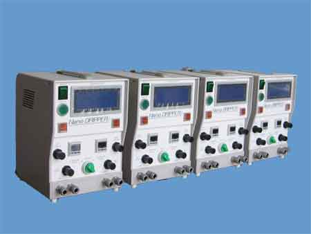
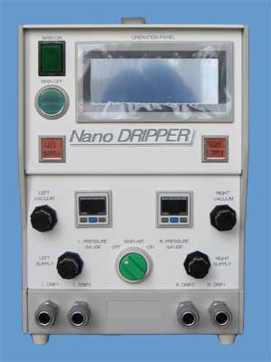

周辺機器
ナノドリッパー
砥粒供給装置 ナノドリッパーVP-2400
-ダイヤモンドスラリー自動滴下装置「ナノドリッパ―」-

- 泡(バブル)方式による砥粒撹拌
- マグネチックスターラーがいらない事による磁性材の混入防止｡
- 砥粒供給の定量化と微量コントロールが可能｡
- 環境，雰囲気を悪化させない、滴下式供給｡
- チューブ配管内におけるスラリーの分離､沈殿がない事により､スラリー供給が出来る｡
- 2系統スラリー供給の選択加工条件の拡大
- 消耗品が少ない事による大幅コストダウンを実現！

| Nano DRIPPER | |
|---|---|
| 本体サイズ | D240 x W206 x T311 |
| 重量 | 4.5Kg |
ナノドリッパーVP-2400 詳細資料
PDF詳細資料.pdf